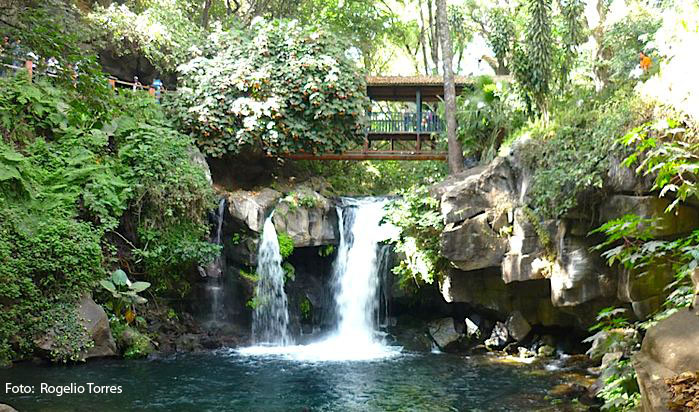

VIAJANDO CON LEO
LUGARES QUE DEBES VISITAR SI O SI!!
El parque nacional de cupatitzio en uruapan se caracteriza por tener registrado 495 especies de plantas nativas y 213 especies de vertebrados terrestres, Es uno de los principales centros recreativos del estado de Michoacán. En este espacio se generan importantes servicios ambientales, entre ellos, protección de la diversidad biológica, captación de agua de lluvia, regulación del clima, captura de carbono y producción de oxígeno ademas el río Cupatitzio, el cual abastece de agua potable a la ciudad de Uruapan y genera energía eléctrica para regar campos de cultivo desde entonces el parque es una de las áreas nacionales protegidas más pequeñas de México, abarca 450 hectáreas de extensión. Fue decretado como parque nacional el 2 de noviembre de 1938 y en el 2007 fue publicado su programa de manejo, instrumento mediante el cual es regulada su administración y operación. a continuacion se te mostrara mas a detalle este increible lugar.

QUIERES VER MAS DETALLES SOBRE EL PARQUE NACIONAL HAZ CLICK AQUI
Janitzio es un pequeño pueblo pesquero cuyo significado en purépecha es "lugar de pesca". Aquí notará que aún se preservan las costumbres establecidas por sus antecesores, tanto que es posible escuchar a los habitantes hablar en lengua purépecha, de igual forma el atuendo típico. ademas Janitzio es famosa por la gran cantidad de turismo que recibe, proveniente tanto de México como de todo el mundo. En lo alto de la isla, observable desde lejos, existe un monumento del héroe nacional José María Morelos y Pavón.Un monumento de 47.6 metros de alto en este monumento contiene en su interior una colección de 56 pinturas que describen la biografía del héroe mexicano. La obra fue encomendada a Juan Tirado Valle nacido en la Ciudad de México la isla se puede visitar yendo en barca desde Pátzcuaro el visitante puede disfrutar durante una corta travesía de la actuación que realizan los pescadores en sus barcas, como rememoración de la pesca que se hacía antiguamente.

DALE CLICK AQUI PARA VER MAS SOBRE JANITZIO
Tequila es un poblado del estado de Jalisco,El nombre de Tequila proviene de la palabra náhuatl Tecuilan (lugar de tributos). Es la cabecera del municipio del mismo nombre con estatus de pueblo mágico, Tequila es conocido por darle su nombre al tequila, al ser uno de los territorios donde este se produce. ademas la rodean campos del ingrediente principal de este licor, la planta del agave azul. El proceso de producción se puede observar en varias destilerías y haciendas el Museo Nacional del Tequila y el Museo Los Abuelos tienen exhibiciones sobre la historia de esta bebida una tradicion de tequila es la “bendición” a las nueve de la noche, todos los días en que sale el sacerdote del templo y ofrece una bendición sonando tres campanadas, en ese momento todas las personas se ponen de pie, volteando al templo, aun cuando van caminando por las calles o en cualquier lugar, incluso las parejas de novios que platican en las bancas de la plaza principal.

Hasta luisito comunica ha estado en este lugar que esperas para ir y disfrutar de un buen tequila!! DALE CLICK PARA VER MAS SOBRE TEQUILA
Barra de Navidad o Puerto de la Navidad es una localidad ubicada en el estado mexicano de Jalisco dentro de esta playa existen bares y clubes nocturnos que conviven con legados históricos y casas antiguas del tiempo de la colonia. La población se dedica principalmente al turismo Como en todas las comunidades costeras, la pesca forma parte integral de la supervivencia de sus habitantes cuenta tambien con hoteles y una exelente vista hacia la costa durante tu desplazamiento por el lugar podras encontrar letreros con direcciones hacia las grandes ciudades de europa como Paris sin duda un lugar muy bonito para vacacionar.

DALE CLICK AQUI PARA VER MAS SOBRE BARRA DE NAVIDAD